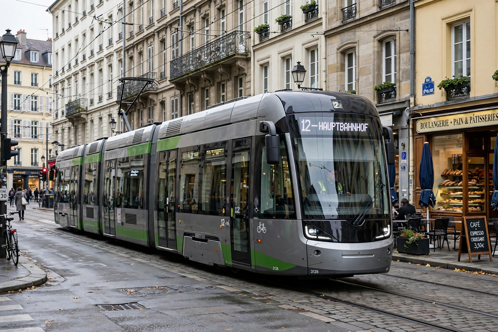

Tram
From Wikipedia, the free encyclopedia

A modern tram in city traffic.A tram (also tramcar, streetcar or trolley) is a rail vehicle that runs on tramway track, usually on public streets shared with other traffic, powered electrically from overhead lines. Horse-drawn trams appeared in the 1830s–60s, electric trams spread from the 1880s, and although many cities (especially in North America and Britain) removed their networks in the mid-20th century, trams have been widely revived since the 1980s as light rail.
History
The Swansea and Mumbles Railway carried horse-drawn passengers from 1807; New York opened a horsecar line in 1832. Frank Sprague\'s successful electric system in Richmond, Virginia (1888) sparked global electrification. Networks peaked between the wars, then contracted as buses and cars took over.
Modern systems
Melbourne operates the world\'s largest tram network; European cities such as Vienna, Prague, Berlin and Amsterdam retain huge systems, while France led a renaissance with new networks in Nantes (1985) and Strasbourg (1994). Modern low-floor vehicles, grassed track and priority signalling characterise new designs.
Light rail
Light rail is a related mode using tram-like vehicles on largely segregated alignments, bridging trams and metros; examples include systems across North America (e.g. Los Angeles, Calgary) and Britain\'s Docklands Light Railway and Manchester Metrolink.